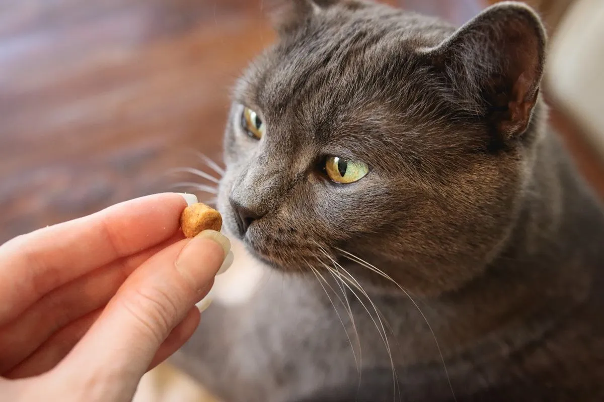

How To Deal With Food Aggression in Cats


As a veterinarian, we see many cases of food aggression in cats, which can be a challenging and stressful issue for both the cat and the owner. Food aggression, also known as food possessiveness or resource guarding, is a common behavioral problem in cats, where they become protective and aggressive around their food. This can lead to conflicts with other pets in the household, and even with their owners. In this article, we will explore the causes of food aggression in cats, and provide practical tips and advice on how to deal with it.
Table of Contents
Understanding Food Aggression in Cats
Food aggression in cats is a complex behavior that can be caused by a combination of genetic, environmental, and social factors. Some cats may become aggressive around their food due to fear or anxiety, while others may be motivated by a desire to protect their resources. We see this behavior in multi-cat households, where cats may compete for food and resources, leading to conflicts and aggression.
It's essential to recognize the warning signs of food aggression in cats, which can include growling, hissing, and swatting at people or other pets who approach their food. In severe cases, cats may even bite or attack others who try to take their food or approach them while they're eating.
Causes of Food Aggression in Cats
There are several possible causes of food aggression in cats, including:
- Genetic predisposition: Some breeds, such as Siamese and Abyssinian, are more prone to food aggression due to their genetic makeup.
- Environmental factors: Cats that are fed in a competitive or stressful environment, such as in a multi-cat household, may develop food aggression as a way to protect their resources.
- Social learning: Cats may learn food aggression by observing other cats or pets in the household.
- Medical issues: Certain medical conditions, such as hyperthyroidism or dental problems, can contribute to food aggression in cats.
Also Read
Check out more pet care guides hereDealing with Food Aggression in Cats
Dealing with food aggression in cats requires patience, consistency, and positive reinforcement training. We recommend the following steps:
As a veterinarian, I always advise owners to feed their cats in a quiet, stress-free area, and to avoid approaching them while they're eating. This can help reduce anxiety and aggression around food.
Additionally, we recommend using a slow feeder bowl, which can help reduce gobbling and make mealtime less stressful for cats. It's also essential to establish a regular feeding schedule, and to avoid free-feeding, which can contribute to food aggression.
| Cat Breed | Feeding Schedule | Nutrition Requirements |
|---|---|---|
| Siamese | 2-3 times a day | High-protein diet |
| Abyssinian | 2-3 times a day | High-fiber diet |
Training a Food Aggressive Cat
Training a food aggressive cat requires positive reinforcement techniques, such as clicker training and reward-based training. We recommend starting with short training sessions, and gradually increasing the duration and complexity of the training.
It's also essential to socialize your cat to other pets and people, especially during mealtime, to help reduce anxiety and aggression. We recommend starting with small, controlled interactions, and gradually increasing the exposure to other pets and people.
Expert Tips for Preventing Food Aggression
Preventing food aggression in cats requires a combination of proper feeding practices, socialization, and training. We recommend the following expert tips:
- Feed your cat in a quiet, stress-free area.
- Avoid approaching your cat while they're eating.
- Use a slow feeder bowl to reduce gobbling and stress.
- Establish a regular feeding schedule.
- Socialize your cat to other pets and people, especially during mealtime.
Common Mistakes to Avoid
When dealing with food aggression in cats, there are several common mistakes to avoid, including:
- Punishing or scolding your cat for food aggression, which can exacerbate the problem.
- Feeding your cat in a competitive or stressful environment.
- Ignoring the warning signs of food aggression, such as growling or hissing.
By avoiding these common mistakes, and following the expert tips and advice outlined in this article, you can help prevent and manage food aggression in your cat.
Conclusion
In conclusion, food aggression in cats is a common behavioral problem that can be challenging to deal with. However, by understanding the causes of food aggression, and following the expert tips and advice outlined in this article, you can help prevent and manage this behavior. Remember to always prioritize your cat's safety and well-being, and to seek professional help if you're unsure about how to deal with food aggression in your cat.
Please consult with a veterinarian before making any changes to your cat's diet or behavior. With patience, consistency, and positive reinforcement training, you can help your cat overcome food aggression and live a happy, healthy life.
Dr. Amelia Richardson
DVM, Senior Veterinary Editor
Veterinarian with 12+ years of experience in small animal medicine, pet nutrition, and behavioral science. Passionate about helping pet owners provide the best care for their furry companions.
Leave a Comment